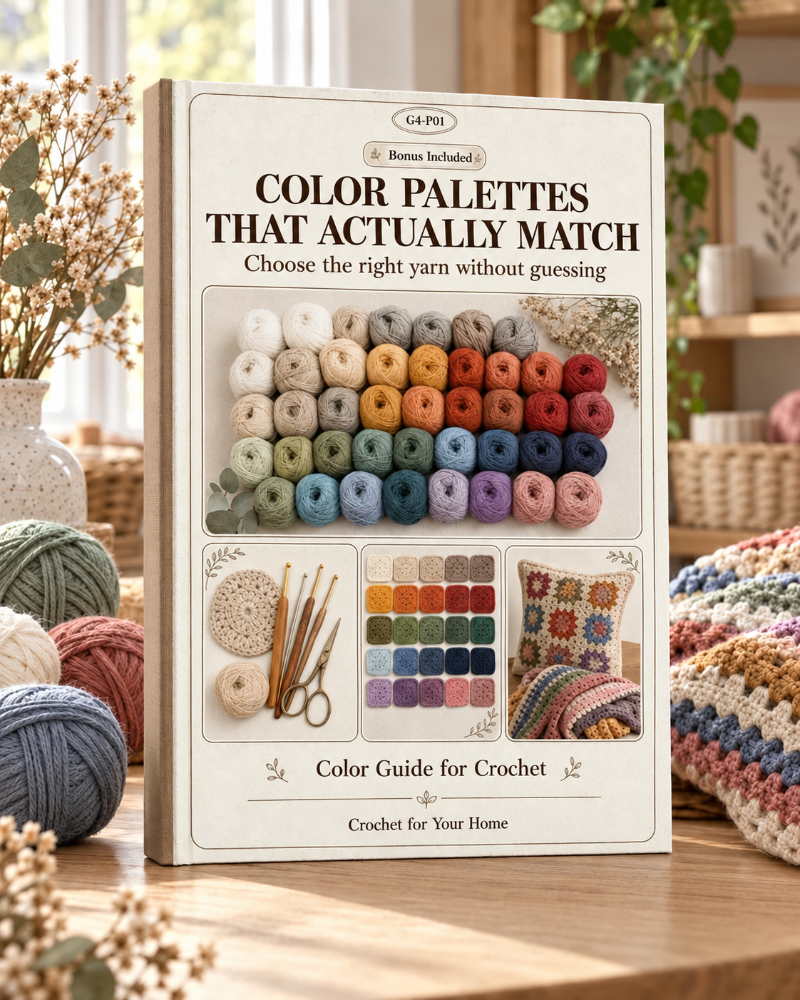

Your complete reference for every stitch used in the 30 patterns included in this collection.
Each stitch below includes its standard abbreviation, symbol, description, and the best situations to use it. Bookmark this section — you will come back to it often.
| Stitch | Abbr. | Symbol | How to Work It | Best For |
|---|---|---|---|---|
| Chain | ch | ○ | Yarn over, pull through the loop on the hook. | Foundation rows, turning chains, spacing |
| Slip Stitch | sl st | • | Insert hook, yarn over, pull through both the stitch and the loop on the hook in one motion. | Joining rounds, invisible seaming, surface decoration |
| Single Crochet | sc | + | Insert hook, yarn over and pull up a loop (2 loops on hook), yarn over and pull through both loops. | Dense fabric, amigurumi, coasters, tight edges |
| Half Double Crochet | hdc | T | Yarn over, insert hook, yarn over and pull up a loop (3 loops on hook), yarn over and pull through all 3 loops. | Slightly taller than sc, good drape, blanket borders |
| Double Crochet | dc | † | Yarn over, insert hook, yarn over and pull up a loop (3 loops), yarn over and pull through 2 loops, yarn over and pull through remaining 2 loops. | Most common stitch for blankets, cushions, table runners |
| Treble Crochet | tr | ‡ | Yarn over twice, insert hook, yarn over and pull up a loop (4 loops), then work off 2 loops at a time (3 yarn overs total). | Lacy patterns, openwork, tall stitches |
| Double Treble Crochet | dtr | ‡‡ | Yarn over three times, insert hook, yarn over and pull up a loop (5 loops), then work off 2 loops at a time (4 yarn overs total). | Very open, lacy designs, decorative crosses |
| Stitch | Abbr. | How to Work It | Best For |
|---|---|---|---|
| Front Post Double Crochet | FPdc | Yarn over, insert hook from front to back around the post of the stitch below, yarn over and pull up a loop, complete as a regular dc. | Ribbing, cable patterns, textured blankets |
| Back Post Double Crochet | BPdc | Yarn over, insert hook from back to front around the post of the stitch below, yarn over and pull up a loop, complete as a regular dc. | Ribbing (pairs with FPdc), basket weave pattern |
| Front Post Single Crochet | FPsc | Insert hook from front to back around the post of the stitch below, yarn over and pull up a loop, yarn over and pull through both loops. | Subtle texture, edgings, low-profile ribbing |
| Back Post Single Crochet | BPsc | Insert hook from back to front around the post of the stitch below, yarn over and pull up a loop, yarn over and pull through both loops. | Reverse texture, pairs with FPsc for ribbing |
| Stitch | Abbr. | How to Work It | Best For |
|---|---|---|---|
| Popcorn | pop | Work 5 dc in the same stitch, remove hook from loop, insert hook in the first dc of the group, pick up the dropped loop and pull through. Chain 1 to lock. | Bold 3D texture, cushion fronts, statement blankets |
| Bobble | bo | Work 5 dc in the same stitch, but stop each dc with 2 loops remaining (6 loops on hook). Yarn over and pull through all 6 loops at once. | Raised dots, polka-dot patterns, cozy textures |
| Puff Stitch | puff | [Yarn over, insert hook, pull up a loop] 3–5 times in the same stitch (7–11 loops on hook). Yarn over and pull through all loops. Chain 1 to close. | Soft, puffy texture, baby blankets, cushions |
| Shell | sh | Work multiple stitches (typically 5 dc) into the same stitch or space. The fan shape forms naturally. | Elegant borders, blanket patterns, table runners |
| V-Stitch | V-st | Work (1 dc, ch 1, 1 dc) all in the same stitch or space. | Light, airy fabric, spring/summer blankets, placemats |
| Cluster | cl | Work 3–5 dc across several stitches, leaving the last loop of each dc on the hook (4–6 loops), then yarn over and pull through all loops. | Shaping, lace patterns, decorative edgings |
| Picot | picot | Chain 3, slip stitch into the first chain. | Decorative edging, delicate borders, doilies |
| Stitch / Technique | Abbr. | How to Work It | Best For |
|---|---|---|---|
| Magic Ring | MR | Wrap yarn around fingers to form a loop. Insert hook through the loop, yarn over and pull up a loop. Chain 1. Work the required number of stitches into the ring. Pull the tail to close the center hole tightly. | Starting circles, coasters, round cushions, mandalas |
| Single Crochet 2 Together | sc2tog | Insert hook in next stitch, pull up a loop. Insert hook in the following stitch, pull up a loop (3 loops). Yarn over and pull through all 3 loops. | Decreasing, shaping curves, tapered edges |
| Double Crochet 2 Together | dc2tog | Yarn over, insert hook in next stitch, pull up a loop, yarn over and pull through 2 loops (2 loops remain). Repeat in the next stitch (3 loops remain). Yarn over and pull through all 3. | Decreasing in taller stitches, chevron patterns |
| Foundation Single Crochet | fsc | Chain 2. Insert hook in the first ch, pull up a loop (2 loops). Yarn over and pull through 1 loop (the chain). Yarn over and pull through both loops (the sc). For each subsequent stitch, insert hook under 2 loops of the chain just made. | Flexible foundation row, blankets, garments |
How to decode any written crochet pattern with confidence.
Written patterns can look like a foreign language the first time. Once you learn the shorthand, you will read them as easily as a recipe.
ch — chain
sl st — slip stitch
sc — single crochet
hdc — half double crochet
dc — double crochet
tr — treble crochet
dtr — double treble crochet
sk — skip
sp — space
st(s) — stitch(es)
yo — yarn over
rep — repeat
tog — together
RS — right side
WS — wrong side
BL — back loop
FL — front loop
beg — beginning
inc — increase
dec — decrease
pm — place marker
FO — fasten off
MC — main color
CC — contrasting color
| Symbol | Meaning | Example |
|---|---|---|
| * … * | Repeat everything between the asterisks the number of times stated. | *sc in next 3 sts, 2 sc in next st* repeat 6 times = work the sequence 6 times total |
| [ … ] | Repeat the group inside brackets. Often interchangeable with asterisks. | [dc, ch 1, dc] in same sp = a V-stitch worked into one space |
| ( … ) | Stitches worked into the same stitch or space, OR clarifying information. | (2 dc, ch 2, 2 dc) in corner sp = all 6 elements go into the one corner space |
| ( N ) at end | Total stitch count for that row or round. | Row 5: sc in each st across (48) = you should have 48 stitches when finished |
Gauge tells you how many stitches and rows fit in a 10 cm (4″) square using the recommended yarn and hook. If your gauge is off:
For home decor items like cushion covers and placemats, gauge matters more than for blankets because they need to fit a specific size (a pillow insert, a table).
Many patterns require a foundation chain that is a multiple of a certain number. For example, “Multiple of 4 + 3” means your starting chain must be divisible by 4, then add 3 extra chains (e.g., 23, 27, 31, 35). The extra chains usually account for the turning chain.
| US Term | US Abbr. | UK Equivalent | UK Abbr. |
|---|---|---|---|
| Slip stitch | sl st | Slip stitch | ss |
| Single crochet | sc | Double crochet | dc |
| Half double crochet | hdc | Half treble crochet | htr |
| Double crochet | dc | Treble crochet | tr |
| Treble crochet | tr | Double treble crochet | dtr |
| Double treble crochet | dtr | Triple treble crochet | trtr |
| Gauge | — | Tension | — |
| Skip | sk | Miss | miss |
| Yarn over | yo | Yarn over hook | yoh |
Everything you need to know about choosing the right yarn for home decor projects.
The yarn you choose determines how your finished piece looks, feels, and holds up over time. For items that will be used and washed regularly, this choice is especially important.
| Weight | CYC Symbol | Stitches per 4″ (sc) | Recommended Hook (mm) | Recommended Hook (US) | Common Uses |
|---|---|---|---|---|---|
| 0 — Lace | 𝟎 | 32–42 | 1.5–2.25 | 6–B/1 | Doilies, delicate table toppers |
| 1 — Superfine | 𝟏 | 21–32 | 2.25–3.5 | B/1–E/4 | Fine table runners, lace edgings |
| 2 — Fine | 𝟐 | 16–20 | 3.5–4.5 | E/4–7 | Lightweight placemats, curtain ties |
| 3 — DK / Light | 𝟑 | 12–17 | 4.5–5.5 | 7–I/9 | Cushion covers, light throws |
| 4 — Worsted / Medium | 𝟒 | 11–14 | 5.5–6.5 | I/9–K/10.5 | Blankets, cushions, organizers, most home decor |
| 5 — Bulky | 𝟓 | 8–11 | 6.5–9 | K/10.5–M/13 | Chunky blankets, basket organizers |
| 6 — Super Bulky | 𝟔 | 6–9 | 9–16 | M/13–Q | Arm-knit blankets, large baskets |
| 7 — Jumbo | 𝟕 | 5 or fewer | 16+ | Q and larger | Giant floor poufs, thick rugs |
| Fiber | Pros | Cons | Best Home Decor Uses |
|---|---|---|---|
| Cotton | Excellent stitch definition, machine washable, breathable, no pilling | Less elastic, can feel stiff at first, heavier | Coasters, placemats, table runners, kitchen items, dishcloths |
| Acrylic | Affordable, huge color range, machine washable, lightweight, allergy-friendly | Can pill with heavy use, less breathable, melts under heat | Blankets, cushion covers, decorative items that are handled less |
| Wool | Warm, naturally elastic, beautiful drape, felting option | Can shrink in hot water, may felt unintentionally, some people are allergic | Winter throws, felted baskets, cushion covers (with pillow insert protection) |
| Bamboo | Silky feel, beautiful drape, naturally antibacterial, eco-friendly | Splits easily on the hook, stretches with weight, slippery | Lightweight throws, decorative cushion covers |
| Cotton-Acrylic Blend | Combines stitch definition of cotton with softness of acrylic, easy care | More expensive than pure acrylic | Versatile — good for nearly all home decor projects |
| Polyester | Durable, holds shape well, quick-drying | Lacks natural feel, can be squeaky on hook | Outdoor cushions, items that need heavy washing |
Yarn amounts vary by stitch pattern, hook size, and your tension. Use these guidelines as starting estimates:
| Project Type | Approximate Yardage (Worsted Weight) |
|---|---|
| Coaster (10 cm / 4″ diameter) | 15–25 yards |
| Placemat (30 × 45 cm / 12 × 18″) | 100–150 yards |
| Table runner (30 × 120 cm / 12 × 48″) | 250–400 yards |
| Cushion cover (45 × 45 cm / 18 × 18″) | 200–350 yards (front + back) |
| Baby blanket (75 × 100 cm / 30 × 40″) | 800–1,200 yards |
| Throw blanket (130 × 180 cm / 50 × 70″) | 2,000–3,000 yards |
| Small organizer basket | 150–250 yards |
Golden rule: always buy one extra skein. Running out mid-project and finding the same dye lot is often impossible. You can always return unused skeins with a receipt.
Beyond the hook: every tool you need for professional-quality home decor crochet.
You can start crocheting with just a hook and yarn, but the right tools make each project faster, neater, and more enjoyable.
| Material | Feel | Best For | Price Range |
|---|---|---|---|
| Aluminum | Smooth, fast, cool to touch | General crocheting, acrylic and cotton yarn | $ |
| Bamboo / Wood | Warm, slight grip, lightweight | Slippery yarns (silk, bamboo), people who prefer a slower pace | $$ |
| Plastic | Very lightweight, flexible | Large hooks (9 mm+), budget-friendly option | $ |
| Steel | Thin, very smooth, precise | Thread crochet, doilies, lace work (sizes 0.6–2.0 mm) | $ |
| Ergonomic (rubber grip) | Cushioned handle, reduced hand fatigue | Long sessions, people with arthritis or hand pain | $$–$$$ |
| Metric (mm) | US Size | UK / Canadian Size |
|---|---|---|
| 2.0 | — | 14 |
| 2.25 | B/1 | 13 |
| 2.5 | — | 12 |
| 2.75 | C/2 | 11 |
| 3.0 | — | 10 |
| 3.25 | D/3 | 10 |
| 3.5 | E/4 | 9 |
| 3.75 | F/5 | 9 |
| 4.0 | G/6 | 8 |
| 4.5 | 7 | 7 |
| 5.0 | H/8 | 6 |
| 5.5 | I/9 | 5 |
| 6.0 | J/10 | 4 |
| 6.5 | K/10.5 | 3 |
| 7.0 | — | 2 |
| 8.0 | L/11 | 0 |
| 9.0 | M/13 | 00 |
| 10.0 | N/15 | 000 |
| 12.0 | P/16 | — |
| 15.0 | P/Q | — |
| 16.0 | Q | — |
| 19.0 | S | — |
| Tool | What It Does | Why You Need It |
|---|---|---|
| Tapestry Needles | Large-eye, blunt-tip needles for weaving in ends and seaming | Essential for finishing every project neatly |
| Stitch Markers | Small clips or rings that mark a specific stitch | Track the first stitch of a round, mark pattern repeats, count stitches |
| Measuring Tape | Flexible tape for measuring gauge swatches and finished pieces | Accuracy for items that need to fit (cushion covers, placemats) |
| Row Counter | Mechanical or digital counter you click after each row | Keeps track of rows in long projects like blankets |
| Sharp Scissors | Small, sharp scissors for cutting yarn cleanly | A clean cut makes weaving in ends much easier |
| Blocking Pins | Rust-proof T-pins or blocking pins | Hold your project in shape during blocking |
| Blocking Mats | Interlocking foam tiles with grid lines | Flat surface for pinning and drying blocked projects |
| Spray Bottle | Fine mist spray for wet and spray blocking | Even moisture distribution without soaking |
Turn a good project into a professional-looking piece with these essential finishing skills.
The difference between homemade and handmade is in the finishing. These techniques take minutes but transform the final result.
Blocking is the process of shaping your finished crochet piece to its final dimensions using moisture and/or heat. It evens out stitches, opens up lace patterns, and makes edges lie flat.
| Method | How | Best For | Dry Time |
|---|---|---|---|
| Wet Blocking | Soak the piece in lukewarm water for 15–20 minutes. Gently squeeze (never wring). Lay flat on blocking mats, pin to dimensions, let air dry completely. | Cotton items, lace, anything that needs significant reshaping | 12–24 hours |
| Steam Blocking | Pin the piece to blocking mats. Hold a steam iron 2–3 cm above the fabric (never touch). Let the steam penetrate, then let it dry pinned. | Acrylic yarn (sets the shape permanently — called “killing” acrylic), wool | 1–4 hours |
| Spray Blocking | Pin the piece to blocking mats. Mist evenly with water using a spray bottle. Let dry completely while pinned. | Items that need light shaping, quick touch-ups, delicate fibers | 4–8 hours |
| Method | How | Result | Best For |
|---|---|---|---|
| Whip Stitch | Hold pieces together, wrong sides facing. Thread tapestry needle. Pass through both pieces from back to front, repeat along the edge. | Visible seam, slightly raised ridge | Quick joins, cushion backs, granny squares |
| Mattress Stitch | Hold pieces side by side, right sides up. Sew through corresponding stitches on each piece in a zigzag pattern. | Nearly invisible seam | Cushion covers, blanket panels, anything visible on the right side |
| Slip Stitch Join | Hold pieces together, insert hook through both layers, yarn over and pull through all loops. Repeat along edge. | Decorative ridge, fast | Granny squares, motif blankets, decorative seams |
| Single Crochet Join | Hold pieces together, sc through both layers along the edge. | Strong, visible ridge | Organizer baskets, items needing structural strength |
| Addition | How to Attach | Tips |
|---|---|---|
| Buttons | Sew on with matching thread through the crochet fabric. Reinforce with a small piece of felt behind the button on loose fabrics. | Make button loops with chain stitches during the border round. Test the fit before finishing. |
| Zippers | Pin the zipper in place first, then hand-sew with a backstitch using matching thread. | Use for cushion covers. A zipper makes removing the insert for washing easy. |
| Fabric Lining | Cut lining fabric 1 cm larger than the crochet piece on all sides. Fold edges under, pin, and hand-sew with a slip stitch. | Adds structure to bags and organizers. Prevents items from poking through openwork patterns. |
| Non-Slip Backing | Apply non-slip fabric or shelf liner to the back of coasters and placemats with fabric glue or hand-stitching. | Essential for coasters on polished surfaces. Test the glue on a swatch first. |
Common crochet problems, what causes them, and how to fix them every time.
Every crocheter has faced these issues. Knowing the cause is half the fix. This section will save you hours of frustration and frogging.
You now have a complete reference for every stitch, material, and technique in this collection. Keep this guide beside you as you work through the 30 patterns — you will find yourself coming back to it again and again.
Open the main pattern book and pick your first project. Start with something small — a coaster or a placemat — to warm up, then work your way up to cushion covers and blankets.
Happy crocheting!